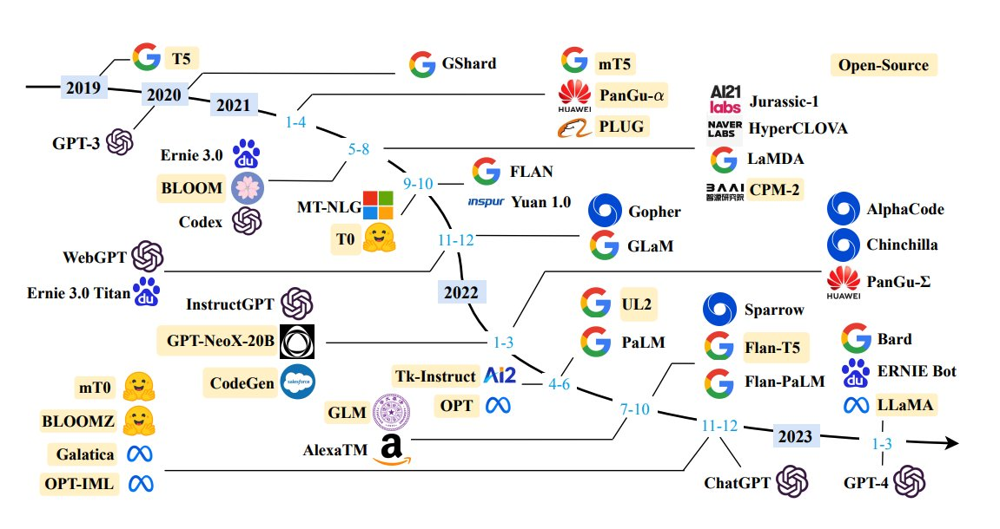

Vous désirez intégrer la liste de diffusion ? L’inscription se fait ici.
Actualités de la data science
Un foisonnement d’avancées…
L’actualité des modèles d’intelligence artificielle est très chargée (résumé des annonces du mois de mars) et cette lettre se concentrera sur les actualités majeures.
Github Copilot, l’assistant de code de Microsoft, devrait prochainement utiliser ChatGPT. Après ChatGPT, le navigateur Bing s’enrichit également d’un créateur d’image basé sur Dall-E. Pendant ce temps, Midjourney (une des principales alternatives de création d’images) sort sa V5, améliorant encore le réalisme du rendu.
Face à la recrudescence des montages utilisant Midjourney, qu’il s’agisse de deep fakes ou d’images à vocation humoristique, Le Monde a publié un guide pour reconnaître une image générée par une IA.

… qui alimentent les débats autour de la place de l’IA dans la société et notre économie numérique…
Alors que ChatGPT est déjà utilisé par plus de 100 millions d’utilisateurs, seulement quatre mois après sa sortie, il est légitime de se poser la question, comme le fait Gaspard Koenig dans Les Echos, du rapport à la vérité des IA génératrices et des implications sociétales de la généralisation de ces assistants.
Les prospectivistes, après s’être consacrés au bitcoin et à la blockchain, comme Jean Detrez - le héros de Jean Philippe Toussaint -, commencent à proposer des évaluations des conséquences économiques de cette (r)évolution. Dernier chiffre en date : d’après Goldman Sachs, 300 millions d’emplois au niveau mondial pourraient être supprimés ou amenés à évoluer.
Par ailleurs, la question de l’ouverture des corpus ayant servi à entraîner ces modèles ou de la licence à réutiliser des modèles pré-entraînés est importante à plusieurs égards. D’abord, dans une perspective scientifique, il apparaît compliqué d’évaluer la qualité d’un modèle ou lui proposer des alternatives sans accès à des données scientifiques de base comme le nombre de paramètres (inconnu pour GPT-4 par exemple). Mais c’est aussi une question économique : si ces outils deviennent de plus en plus incontournables, quel sera le business model de ce secteur ? Ces services resteront-ils gratuits avec en contrepartie une réutilisation des données fournies, potentiellement opaque et difficilement contrôlable par l’utilisateur, ou seront-ils monétisés ?
La publication en open source de modèles de langage est donc un enjeu d’indépendance pour les organisations intéressées par l’utilisation de chatbots ou l’extraction d’information. Cette publication continue à suivre un rythme presque quotidien. Cet état de l’art des modèles publiés en open source publié en janvier est déjà largement dépassé. Et celui-ci ne sera probablement plus à jour tout aussi rapidement.

Dans la dernière quinzaine, l’une des principales annonces est la publication par LAION d’OpenFlamingo, une version open source de Flamingo, modèle développé par DeepMind (filiale de Google) pour décrire de manière automatique une scène présente sur une image et offrir des informations contextuelles.
Afin de pouvoir intégrer à la fois des fonctionnalités de reconnaissance d’image et textuelle, celui-ci s’appuie sur des composantes open source pour les modèles de langage et de reconnaissance d’image et sur un jeu de données ouvertes. Des exemples de réutilisation en Python sont disponibles sur le dépôt Github.
Dans le registre IA ouverte, une équipe de chercheurs de plusieurs universités américaines a mis en oeuvre un chatbot ouvert, à partir des modèles LLaMA (Meta, voir Newsletter #11) ou Alpaca (Stanford) : Vicuna. Ce chatbot généraliste permet à un internaute de discuter sur une grande variété de sujets. En plus de s’appuyer sur des modèles ouverts, ce qui peut faciliter sa ré-utilisation dans un cadre interne, ce chat présente un avantage technique puisqu’il s’appuie sur des modèles de langage plus économes en ressources que les modèles type GPT-4.
Dans le même temps, Databricks s’est également appuyé sur LLaMA et Alpaca pour proposer un autre modèle de langage ouvert avec lequel il est possible d’échanger. Ce modèle s’appelle Dolly et est pensé comme premier clone du modèle Alpaca. Dolly peut être entrainé en 30 minutes sur un corpus massif et ne présente “que” 6 milliards de paramètres (qu’il hérite d’Alpaca) ce qui en fait, dans l’écosystème actuel des modèles de langage (LLM), un nain : à titre de comparaison GPT-3 comporte 175 milliards de paramètres et le nombre de paramètres de GPT-4 est inconnu mais pourrait être de l’ordre de la centaine de trillions.
Mozilla rejoint également le bal en investissant 30 millions de dollars pour lancer la startup Mozilla.ai. Pour Mozilla, cette startup sert à adapter la philosophie à l’origine du navigateur Firefox au développement d’intelligences artificielles : proposer des outils ouverts indépendants des principaux acteurs marchands du numérique, sur le modèle des communs plutôt que du bien privé.
La question de la sécurité et de la confidentialité des informations fournies à OpenAI a également été au centre de l’attention au cours de la dernière quinzaine. OpenAI a révélé une faille de sécurité à l’origine d’une fuite de données. Cette question de la confidentialité des informations fournies à ChatGPT a d’ailleurs amené la CNIL italienne à demander le blocage temporaire de l’outil d’OpenAI (voir ici).
Cette interdiction prend place dans un contexte de discussions intenses autour de la place à venir dans nos sociétés de ces robots conversationnels. Une lettre ouverte au fort écho médiatique publiée par des figures de la tech (dont Elon Musk) et des universitaires réclame un moratoire dans le développement de nouveaux modèles d’intelligence artificielle, dont les signataires soulignent à quel point il est difficile de les “comprendre, prédire ou contrôler de manière fiable”.
Cette lettre a été rapidement critiquée. En premier lieu par Andrew Ng qui souligne qu’en plus de l’impossibilité pratique de mettre en oeuvre un tel moratoire dans le cadre d’une recherche privée, ce type de sursis retarde la recherche sur des applications bénéfiques, notamment dans le domaine de la santé. Mais la critique est aussi venue de Timnit Gebru (DAIR), Emily Bender (University of Washington), Angelina McMillan-Major (University of Washington) et Margaret Mitchell (Hugging Face), autrices citées dans la lettre en référence au concept de “Stochastic Parrots” (les modèles de langage répètent des séquences de formes linguistiques comme des ensemble de mots observés dans les corpus d’apprentissage, en fonction de critères probabilistes sur la façon dont ces informations se combinent, mais sans aucune référence au sens).
… mais ne nous font pas oublier certaines autres nouveautés dignes d’intérêt
L’intensité de l’actualité autour de ChatGPT occulte beaucoup de faits qui auraient, dans un autre contexte, amené à des discussions passionnées.
Ainsi, la publication en open source de l’algorithme de recommandation de Twitter permet de mieux comprendre la manière dont fonctionne l’algorithme de recommandation de Twitter, notamment la manière dont des bulles de filtre peuvent advenir après avoir cliqué sur un post par curiosité.
La publication de ce code prend place quelques jours après la découverte qu’une partie importante du code de Twitter était déjà sur Github, sans doute suite à une fuite après l’un des licenciements massifs des derniers mois.
Peut-être n’avez-vous pas remarqué mais Twitter n’a plus le même logo depuis lundi. L’oiseau bleu a été remplacé par un chien (un Shiba Inu), logo d’une cryptomonnaie, le dogecoin, dont Elon Musk avait fait une promotion controversée et dont les cours ont connu une envolée depuis.
Le logiciel de création d’applications Docker (principal logiciel de conteneurisation) noue un partenariat avec HuggingFace, qui rassemble une immense bibliothèque de modèles, pour faciliter la réutilisation de modèles de deep learning. Avec cette approche, il est plus facile de proposer aux ré-utilisateurs de modèles des applications prêtes à l’emploi pour tester ou enrichir un modèle sur des infrastructures compatibles avec la technique de la conteneurisation, approche utilisée par les principales plateformes de data science modernes (notamment par celles s’appuyant sur le logiciel Onyxia).
La plateforme Observable propose un comparatif des principales syntaxes de manipulation de données (JavaScript, Python, R et SQL).
Enfin, si vous appréciez les cartes, un hashtag à suivre est le #MapPromptMonday.
Actualités du réseau: événements à venir
Place aux actualités de notre réseau avec les prochains événements que nous organisons.
Première journée du réseau le 17 avril

Nous rappelons la journée du réseau le 17 avril, en présentiel 📅 (Newsletter #12). Les places en présentiel sont presque épuisées, ne tardez pas à vous inscrire ! Si vous désirez tout de même suivre les échanges, inscrivez-vous à la retransmission par Zoom.
Les masterclass avec DataScientest continuent
Nos cycles de masterclass datascientest continuent ! Les cycles parallèles NLP et analyse d’image continuent.
Au programme:
- Analyse d’image, niveau confirmé (📅 14 avril, 10h-12h )
- NLP, niveau avancé (📅 12 mai, 10h-12h )
- Analyse d’image, niveau avancé (📅 9 juin, 10h-12h )
Inscription ici !
Actualités du réseau: dernières nouveautés
Replay “Bonnes pratiques pour la mise en production de projets data science” (30 mars)
Le replay de la présentation succincte du contenu du cours de l’ENSAE “Bonnes pratiques pour la mise en production de projets data science” ayant eu lieu dans le cadre du programme 10% (voir Newsletter #12) est disponible sur le site du programme 10%.
Replay de l’événement autour de l’OCRisation avec Christopher Kermorvant (29 mars)
Christopher Kermorvant, chercheur spécialisé en OCRisation et fondateur de Teklia, a proposé au réseau une présentation très pédagogique sur l’extraction de texte avec des méthodes de deep learning.
A partir de l’exemple de recensements de la fin du XIXe siècle, nous avons ainsi bénéficié d’une excellente introduction à l’histoire des techniques d’OCRisation et la manière dont aujourd’hui ces modèles fonctionnent en associant reconnaissance d’image et analyse textuelle.
Le replay est ici !
Replay de la présentation de la documentation collaborative Carpentries (28 mars)
Kate Burnett-Isaacs, de Statistics Canada, nous a présenté l’initiative Meta Academy / Carpentries permettant de construire une documentation francophone de référence sur R, Python et Git à destination des utilisateurs de données.
Le replay est ici !